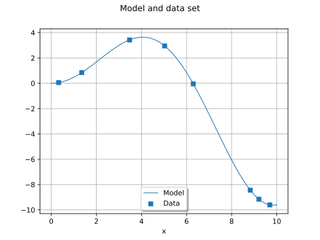
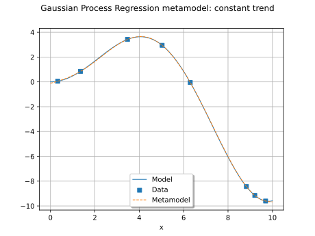
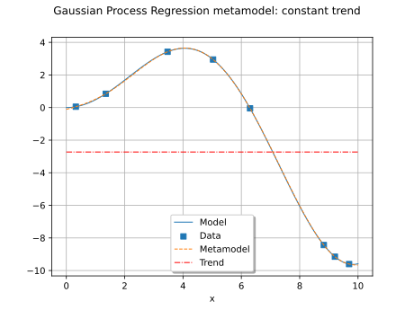
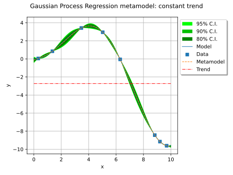
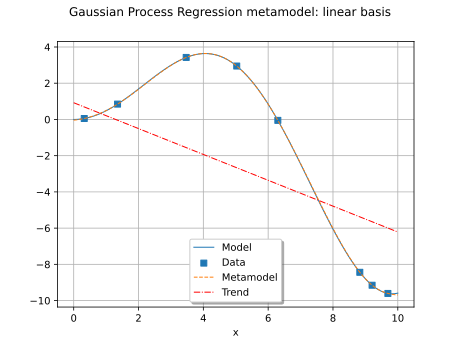
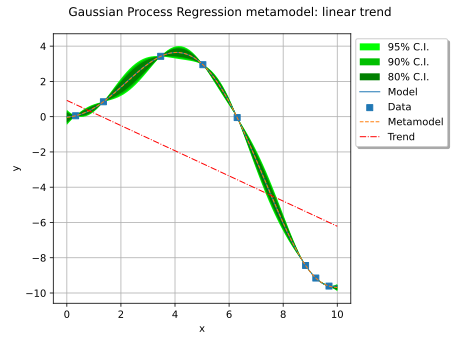
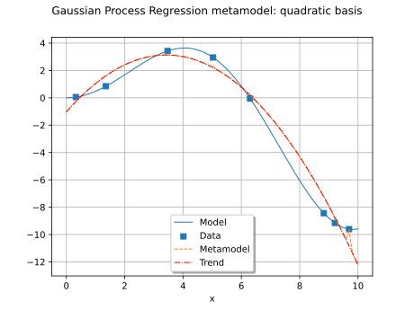
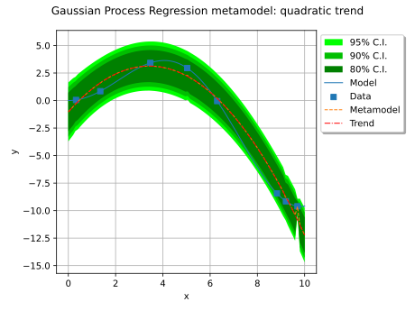
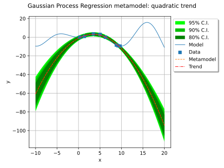

Note
Go to the end to download the full example code.
Gaussian Process Regression: choose a polynomial trend¶
import openturns as ot
import openturns.viewer as otv
Introduction¶
In this example, we build a metamodel using a Gaussian process regression (refer to Gaussian process regression) whose trend is estimated on a given data set. We illustrate the impact of the choice of the trend function basis on the metamodel. This example focuses on three polynomial trends:
At lats, we illustrate that far away from the data set, the Gaussian Process Regression metamodel is entirely determined by the trend function. Depending on the trend, it might be a bad idea to use the Gaussian process regression metamodel far away from the training data set.
Refer to Gaussian process regression to get all the notations and the theoretical aspects. In the Gaussian Process Regression: choose a polynomial trend on the beam model example, we give another example of this method. In the Gaussian Process Regression: choose an arbitrary trend example, we show how to configure an arbitrary trend.
The model is the function ![g: \Rset \rightarrow \Rset]() defined by:
defined by:
![\model(x) = x \sin \left( \frac{x}{2} \right), \quad \forall x \in [0,10].]()
We consider the MaternModel covariance model.
The covariance model is fixed but its parameters must be calibrated
depending on the data.
The Gaussian process regression metamodel is defined by:
![\metaModel(\vect{x}) \Expect{Y(\omega, x)\, | \, \cC}]()
where:
![Y(\omega, x) = \mu(x) + W(\omega, x)]()
where ![\mu: \Rset \rightarrow \Rset]() is the trend function and
is the trend function and
![\vect{W}]() a Gaussian process of dimension 1 with zero mean and covariance function
a Gaussian process of dimension 1 with zero mean and covariance function ![\mat{C}]() .
We consider the
.
We consider the MaternModel covariance model.
The trend is deterministic and the Gaussian process is probabilistic but they both contribute to the metamodel.
A special feature of the Gaussian process regression metamodel ![\metaModel]() is the interpolation
property: the metamodel is exact at the training data set.
is the interpolation
property: the metamodel is exact at the training data set.
The objective is to estimate the trend function ![\mu]() and the parameters of the covariance model,
labelled as active: by default, the active parameters are the scale and the amplitude
and the parameters of the covariance model,
labelled as active: by default, the active parameters are the scale and the amplitude ![\vect{\theta} = (\theta, \sigma)]() but refer to
but refer to
openturns.CovarianceModel to get details on the activation of the estimation of the other parameters.
Define the model¶
We define the model ![\model]() with a
with a SymbolicFunction.
model = ot.SymbolicFunction(["x"], ["x * sin(0.5 * x)"])
We use the following sample to train our metamodel.
xmin = 0.0
xmax = 10.0
nTrain = 8
Xtrain = ot.Uniform(xmin, xmax).getSample(nTrain).sort()
Xtrain
The values of the model are also needed for training.
Ytrain = model(Xtrain)
Ytrain
We shall test the model on a set of points based on a regular grid.
nTest = 100
step = (xmax - xmin) / (nTest - 1)
x_test = ot.RegularGrid(xmin, step, nTest).getVertices()
We draw the training points and the model at the testing points. We encapsulate it into a function to use it again later.
def plot_model(color):
graph = ot.Graph("", "x", "")
y_test = model(x_test)
curveModel = ot.Curve(x_test, y_test)
curveModel.setLineStyle("solid")
curveModel.setColor(color)
curveModel.setLegend("Model")
graph.add(curveModel)
cloud = ot.Cloud(Xtrain, Ytrain)
cloud.setColor(color)
cloud.setPointStyle("fsquare")
cloud.setLegend("Data")
graph.add(cloud)
graph.setLegendPosition("bottom")
return graph
palette = ot.Drawable.BuildDefaultPalette(5)
graph = plot_model(palette[0])
graph.setTitle("Model and data set")
view = otv.View(graph)

Scale the input training sample¶
We often have to apply a transform on the input data before performing the Gaussian process regression.
This makes the estimation of the hyperparameters of the Gaussian process regression metamodel
easier for the optimization algorithm.
To do so, we write a linear transform of our input data: we make it unit centered at its mean.
Then we fix the mean and the standard deviation to their values with the ParametricFunction.
We build the inverse transform as well.
We first compute the mean and standard deviation of the input data.
mean = Xtrain.computeMean()[0]
stdDev = Xtrain.computeStandardDeviation()[0]
print("Xtrain, mean: %.3f" % mean)
print("Xtrain, standard deviation: %.3f" % stdDev)
Xtrain, mean: 5.526
Xtrain, standard deviation: 3.613
trans_func = ot.SymbolicFunction(["mean", "sigma", "x"], ["(x - mean) / sigma"])
inv_trans_func = ot.SymbolicFunction(["mean", "sigma", "x"], ["sigma * x + mean"])
myTransform = ot.ParametricFunction(trans_func, [0, 1], [mean, stdDev])
myInverseTransform = ot.ParametricFunction(inv_trans_func, [0, 1], [mean, stdDev])
Scale the input training sample.
scaledXtrain = myTransform(Xtrain)
scaledXtrain
Constant basis¶
In this paragraph we choose a basis constant for the estimation of the trend.
The basis is built with the ConstantBasisFactory class.
dimension = 1
basis = ot.ConstantBasisFactory(dimension).build()
We build the Gaussian process regression algorithm on the transformed data, the output data, the covariance
model and the basis.
First, we define the MaternModel covariance model. The two first parameters
(scale and amplitude) will be updated
but not the third one (which is the ![\nu]() parameter).
parameter).
First, we build the ![Y(\omega, x)]() Gaussian process with the class
Gaussian process with the class
GaussianProcessFitter.
covarianceModel = ot.MaternModel([1.0], [1.0], 2.5)
algo_fit = ot.GaussianProcessFitter(scaledXtrain, Ytrain, covarianceModel, basis)
algo_fit.run()
fit_result = algo_fit.getResult()
Then, we condition the process to the data set with the class
GaussianProcessRegression.
algo_gpr = ot.GaussianProcessRegression(fit_result)
algo_gpr.run()
We can get the metamodel on the transformed data:
gpr_result = algo_gpr.getResult()
metamodel_transformed_data = gpr_result.getMetaModel()
The final metamodel on the initial input data is built with the class
ComposedFunction.
metamodel_gpr = ot.ComposedFunction(metamodel_transformed_data, myTransform)
Define a function to plot the metamodel:
def plot_metamodel(x_test, metamodel, color):
y_test = metamodel(x_test)
curve = ot.Curve(x_test, y_test)
curve.setLineStyle("dashed")
curve.setColor(color)
curve.setLegend("Metamodel")
return curve
We can draw the metamodel and the model on the same graph.
graph = plot_model(palette[0])
graph.add(plot_metamodel(x_test, metamodel_gpr, palette[1]))
graph.setTitle("Gaussian Process Regression metamodel: constant trend")
view = otv.View(graph)

We also observe the estimated values of the hyperparameters of the trained covariance model. Note that the scale parameter is related to the transformed data. To get the scale parameter related to the initial variables, you have to multiply it by the stdDev factor.
theta = gpr_result.getCovarianceModel().getScale()[0]
print("Scale parameter: %.3e" % theta)
sigma = gpr_result.getCovarianceModel().getAmplitude()[0]
print("Amplitude parameter: %.3e" % sigma)
Scale parameter: 1.368e+00
Amplitude parameter: 6.077e+00
We can display the trend function computed on the transformed data:
![\mu \left(\dfrac{x-m}{\sigma}\right)]() where :math:(m, sigma)` is the mean and standard
deviation of the input data set. We use the method
where :math:(m, sigma)` is the mean and standard
deviation of the input data set. We use the method
getTrendCoefficients().
c0 = fit_result.getTrendCoefficients()
print("The trend is the curve mu((x-m)/sigma) = %.6e" % c0[0])
The trend is the curve mu((x-m)/sigma) = -2.726224e+00
We can also get the trend function acting on the transformed data using the method
getMetaModel() of the
class GaussianProcessFitterResult.
trend_transformed_data = fit_result.getMetaModel()
trend_transformed_data
The trend function acting on the initial input data is built with the class
ComposedFunction.
trend = ot.ComposedFunction(trend_transformed_data, myTransform)
Define a function to plot the trend.
def plot_trend(x_test, trend_func, color):
y_test = trend_func(x_test)
curve = ot.Curve(x_test, y_test)
curve.setLineStyle("dotdash")
curve.setColor(color)
curve.setLegend("Trend")
return curve
We draw the estimated trend function.
graph.add(plot_trend(x_test, trend, "red"))
graph.setTitle("Gaussian Process Regression metamodel: constant trend")
view = otv.View(graph)

Now, we want to plot some confidence bounds of the metamodel. We use the class
GaussianProcessConditionalCovariance which is built from the Gaussian
Process Regression result. We create a function to plot confidence bounds.
def plot_GPRConfidenceBounds(gpr_result, x_test, myTransform, color, alpha=0.05):
bilateralCI = ot.Normal().computeBilateralConfidenceInterval(1.0 - alpha)
quantileAlpha = bilateralCI.getUpperBound()[0]
sqrt = ot.SymbolicFunction(["x"], ["sqrt(x)"])
n_test = x_test.getSize()
scaled_x_test = myTransform(x_test)
gpr_condCov = ot.GaussianProcessConditionalCovariance(gpr_result)
conditionalVariance = gpr_condCov.getConditionalMarginalVariance(scaled_x_test)
conditionalSigma = sqrt(conditionalVariance)
metamodel_transf_data = gpr_result.getMetaModel()
y_test = metamodel_transf_data(scaled_x_test)
dataLower = [
y_test[i, 0] - quantileAlpha * conditionalSigma[i, 0] for i in range(n_test)
]
dataUpper = [
y_test[i, 0] + quantileAlpha * conditionalSigma[i, 0] for i in range(n_test)
]
boundsPoly = ot.Polygon.FillBetween(x_test.asPoint(), dataLower, dataUpper)
boundsPoly.setColor(ot.Drawable.ConvertFromHSV(color[0], color[1], color[2]))
boundsPoly.setLegend("%d%% C.I." % ((1.0 - alpha) * 100))
return boundsPoly
We plot the bounds of three different confidence intervals of level ![1-\alpha]() :
:
alphas = [0.05, 0.1, 0.2]
# three different green colors defined by HSV values:
bounds_colors = [[120, 1.0, 1.0], [120, 1.0, 0.75], [120, 1.0, 0.5]]
graph = ot.Graph(
"Gaussian Process Regression metamodel: constant trend", "x", "y", True
)
graph.add(
plot_GPRConfidenceBounds(
gpr_result, x_test, myTransform, bounds_colors[0], alphas[0]
)
)
graph.add(
plot_GPRConfidenceBounds(
gpr_result, x_test, myTransform, bounds_colors[1], alphas[1]
)
)
graph.add(
plot_GPRConfidenceBounds(
gpr_result, x_test, myTransform, bounds_colors[2], alphas[2]
)
)
graph.add(plot_model(palette[0]))
graph.add(plot_metamodel(x_test, metamodel_gpr, palette[1]))
graph.add(plot_trend(x_test, trend, "red"))
graph.setLegendCorner([1.0, 1.0])
graph.setLegendPosition("upper left")
view = otv.View(graph)

Linear basis¶
With a linear basis, the vector space is defined by the basis ![\{1, z\}]() : that is
all the function of type
: that is
all the function of type ![y(z) = az + b]() where
where ![a]() and
and ![b]() are
real parameters.
are
real parameters.
basis = ot.LinearBasisFactory(dimension).build()
We build the Gaussian process, then we condition it to the data set.
algo_fit = ot.GaussianProcessFitter(scaledXtrain, Ytrain, covarianceModel, basis)
algo_fit.run()
fit_result = algo_fit.getResult()
algo_gpr = ot.GaussianProcessRegression(fit_result)
algo_gpr.run()
We get the metamodel on the transformed data and we build the final metamodel acting on the initial input data.
gpr_result = algo_gpr.getResult()
metamodel_transformed_data = gpr_result.getMetaModel()
metamodel_gpr = ot.ComposedFunction(metamodel_transformed_data, myTransform)
We get the updated covariance model.
theta = gpr_result.getCovarianceModel().getScale()[0]
print("Scale parameter: %.3e" % theta)
sigma = gpr_result.getCovarianceModel().getAmplitude()[0]
print("Amplitude parameter: %.3e" % sigma)
Scale parameter: 1.100e+00
Amplitude parameter: 4.627e+00
We get the trend function acting on the transformed data and we build the trend function acting on the initial input data.
trend_transformed_data = fit_result.getMetaModel()
trend = ot.ComposedFunction(trend_transformed_data, myTransform)
We draw the model, the trained data set, the estimated trend function and the Gaussian Process Regression metamodel
graph = plot_model(palette[0])
graph.add(plot_metamodel(x_test, metamodel_gpr, palette[1]))
graph.add(plot_trend(x_test, trend, "red"))
graph.setTitle("Gaussian Process Regression metamodel: linear basis")
view = otv.View(graph)

We plot some confidence bounds of the metamodel. sphinx_gallery_thumbnail_number = 6
graph = ot.Graph("Gaussian Process Regression metamodel: linear trend", "x", "y")
graph.add(
plot_GPRConfidenceBounds(
gpr_result, x_test, myTransform, bounds_colors[0], alphas[0]
)
)
graph.add(
plot_GPRConfidenceBounds(
gpr_result, x_test, myTransform, bounds_colors[1], alphas[1]
)
)
graph.add(
plot_GPRConfidenceBounds(
gpr_result, x_test, myTransform, bounds_colors[2], alphas[2]
)
)
graph.add(plot_model(palette[0]))
graph.add(plot_metamodel(x_test, metamodel_gpr, palette[1]))
graph.add(plot_trend(x_test, trend, "red"))
graph.setLegendCorner([1.0, 1.0])
graph.setLegendPosition("upper left")
view = otv.View(graph)

Quadratic basis¶
In this last section, we turn to the quadratic basis. All subsequent analysis should remain the same.
basis = ot.QuadraticBasisFactory(dimension).build()
We build the Gaussian process, then we condition it to the data set.
algo_fit = ot.GaussianProcessFitter(scaledXtrain, Ytrain, covarianceModel, basis)
algo_fit.run()
fit_result = algo_fit.getResult()
algo_gpr = ot.GaussianProcessRegression(fit_result)
algo_gpr.run()
We get the metamodel on the transformed data and we build the final metamodel acting on the initial input data.
gpr_result = algo_gpr.getResult()
metamodel_transformed_data = gpr_result.getMetaModel()
metamodel_gpr = ot.ComposedFunction(metamodel_transformed_data, myTransform)
We get the updated covariance model.
theta = gpr_result.getCovarianceModel().getScale()[0]
print("Scale parameter: %.3e" % theta)
sigma = gpr_result.getCovarianceModel().getAmplitude()[0]
print("Amplitude parameter: %.3e" % sigma)
Scale parameter: 2.593e-03
Amplitude parameter: 1.000e+00
We get the trend function acting on the transformed data and we build the trend acting on the initial input data.
trend_transformed_data = fit_result.getMetaModel()
trend = ot.ComposedFunction(trend_transformed_data, myTransform)
We draw the model, the trained data set, the estimated trend function and the Gaussian Process Regression metamodel.
graph = plot_model(palette[0])
graph.add(plot_metamodel(x_test, metamodel_gpr, palette[1]))
graph.add(plot_trend(x_test, trend, "red"))
graph.setTitle("Gaussian Process Regression metamodel: quadratic basis")
view = otv.View(graph)

We plot some confidence bounds of the metamodel.
graph = ot.Graph(
"Gaussian Process Regression metamodel: quadratic trend", "x", "y", True
)
graph.add(
plot_GPRConfidenceBounds(
gpr_result, x_test, myTransform, bounds_colors[0], alphas[0]
)
)
graph.add(
plot_GPRConfidenceBounds(
gpr_result, x_test, myTransform, bounds_colors[1], alphas[1]
)
)
graph.add(
plot_GPRConfidenceBounds(
gpr_result, x_test, myTransform, bounds_colors[2], alphas[2]
)
)
graph.add(plot_model(palette[0]))
graph.add(plot_metamodel(x_test, metamodel_gpr, palette[1]))
graph.add(plot_trend(x_test, trend, "red"))
graph.setLegendCorner([1.0, 1.0])
graph.setLegendPosition("upper left")
view = otv.View(graph)

And far away from the training data set?¶
We illustrate here that far away from the data set, the Gaussian Process Regression metamodel is entirely determined by the trend function. To do that, we define another input test sample.
xmin = -10.0
xmax = 20.0
nTest = 500
step = (xmax - xmin) / (nTest - 1)
x_test = ot.RegularGrid(xmin, step, nTest).getVertices()
graph = ot.Graph(
"Gaussian Process Regression metamodel: quadratic trend", "x", "y", True
)
graph.add(
plot_GPRConfidenceBounds(
gpr_result, x_test, myTransform, bounds_colors[0], alphas[0]
)
)
graph.add(
plot_GPRConfidenceBounds(
gpr_result, x_test, myTransform, bounds_colors[1], alphas[1]
)
)
graph.add(
plot_GPRConfidenceBounds(
gpr_result, x_test, myTransform, bounds_colors[2], alphas[2]
)
)
graph.add(plot_model(palette[0]))
graph.add(plot_metamodel(x_test, metamodel_gpr, palette[1]))
graph.add(plot_trend(x_test, trend, "red"))
graph.setLegendCorner([1.0, 1.0])
graph.setLegendPosition("upper left")
view = otv.View(graph)

We observe that far away from the training data set, the Gaussian Process Regression metamodel is equal to the trend function which is not a good approximation of the model. In that case, it is not a good idea to use the Gaussian Process Regression metamodel far away from the training data set.
Display figures
otv.View.ShowAll()